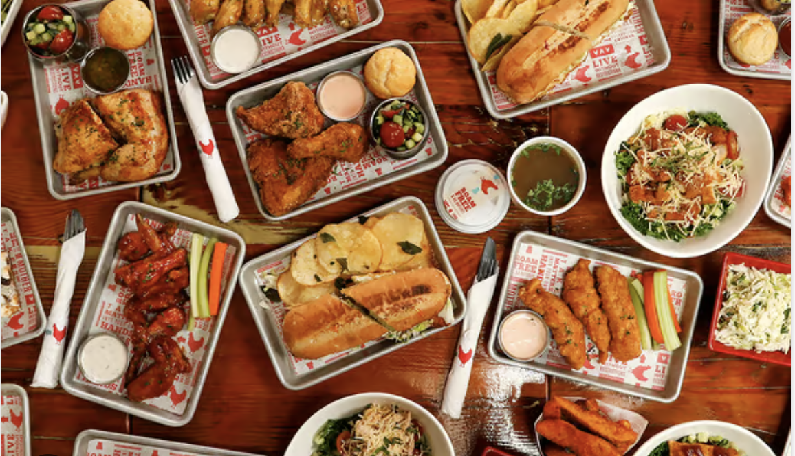

BEST MENU ITEMS
**All items can be made gluten free!**
| Entrees |
Sides |
Salads |
Sauces |
| Fried Chicken Strips |
French Fries |
Fried Chicken Salad |
Buttermilk Ranch |
| Fried Chicken Entree |
Potato Wedges |
Flipped Chicken Salad |
House Sauce |
My favorite meal combonation is: gluten free fried chicken strips with a side of french fries and buttermilk ranch. I love this combonation because the delicious strips dipped in the ranch make for a perfect flavor combonation, and I can also have delicious fries to compliment my meal.
